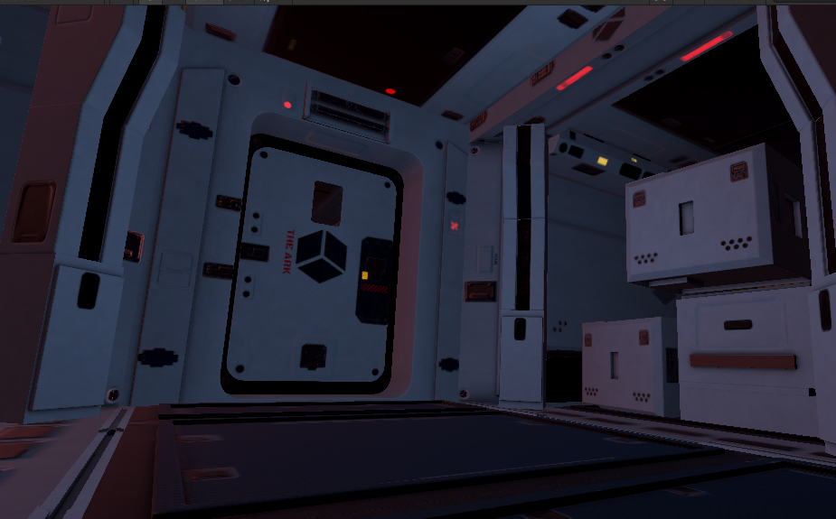
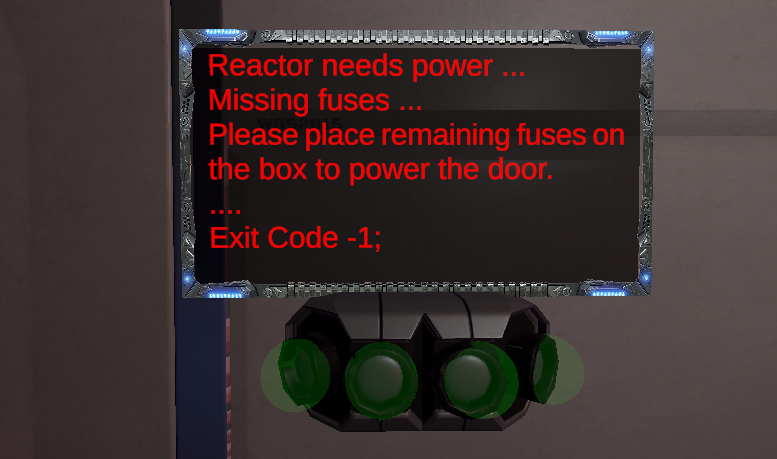
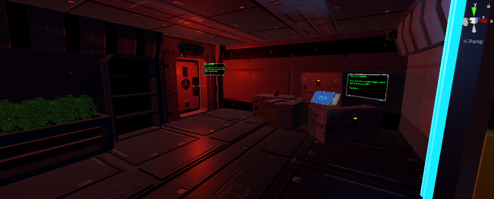
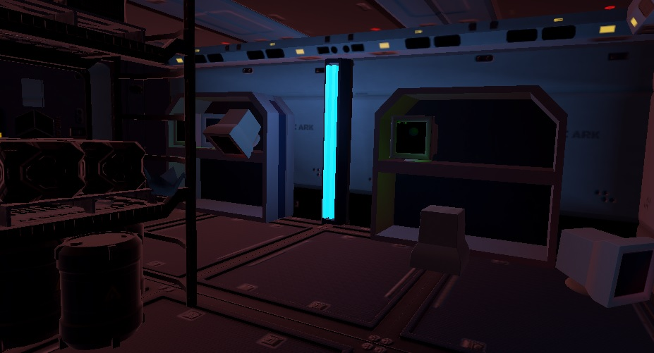
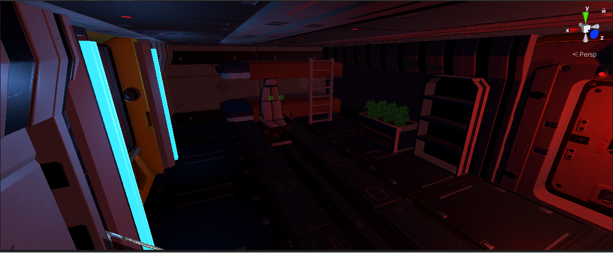
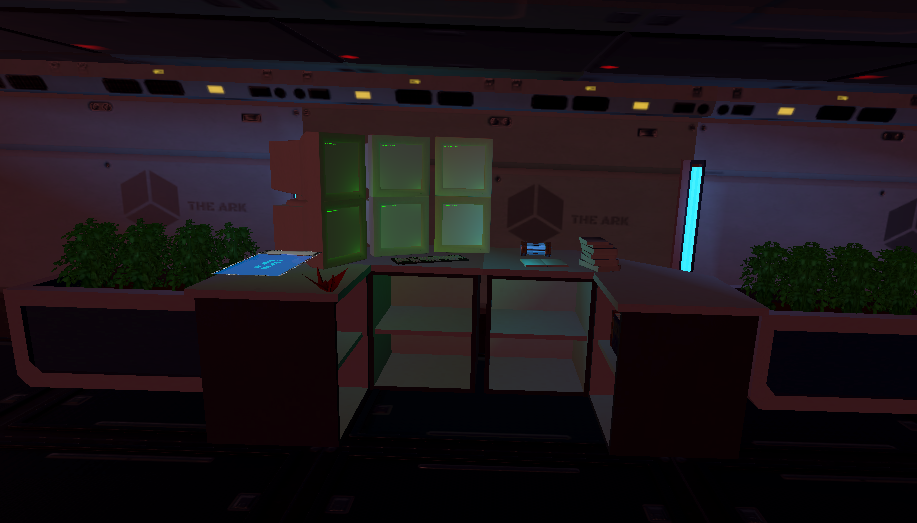

Isolation
After an unsuccessful launch, the SS-H2 (Surveillance Spacecraft Hound 2) is stranded on space.
Waiting for rescue, the player is set on the feet of Arnold Strider, the only crew member in the space craft.
After 1 month of total isolation, Strider has suffered severe damage to his mental health.
Things do not end up there, power has shot down in certain areas, including the life support system and it is on
Strider’s best interest to get into the reactor room and reset the power before is too late.

Design Goals
I aimed to make the objective of the game as simple as possible but still enjoyable.
The reason behind this is that I focused more on how the game feels rather that the
chore mechanics. The best thing about horror games, especially the psychological genre,
is that it leaves a lot to the player’s imagination and constantly plays with their expectations.
In addition, I also aimed to facilitate immersion by introducing zero gravity mechanics, door scans for
openning and closing doors, as well as audio logs to give some narrative elements.
Focus On Player Experience
One of the main obstacles to surpass during production was to be able to combat motion sickness.
Testing the game on myself helped, as I never used VR before and most games and apps i tried previous to
working on the game proved to be nausea inducing.
The major challenge during this project was keeping the FPS at a value of 72.
Anything lower would cause the user to have motion sickness, and since the game
aimed to target user experience as primary focus, this needed to be worked on constantly.
After teaching myself how occlusion works in Unity i was able to reduce the rendering demand,
thus incrementing the frames.
I also managed to selectively avoid collisions when there was no need to be any,
allowing the engine to spend less time calculating unnecessary stuff.
Another thing that could become an issue, but i decided to tackle on before even starting programming, was
player movement. Since moving around in the virtual world without having any sort of feedback on the real
one, made motion sickness manifest.
My solution, make an intuitive wheelchair controls. The player then would remain sitted while operating a
gamified wheel chair with two levers; one operated rotation, while the other forward and backward movement.
Rotations where made extremely slow and fading to black to avoid causing the very issue i intended to avoid.

My main goal is to create a memorable horror experience.
I aimed to put the player in the character’s shoes and make the Strider’s struggles, their struggles.
The objective of the game is to gather 4 fuses to power up the reactor door and reset the
electricity while they are being haunted by an unknown entity.


To follow up the design choices on creating a gloomy and claustrophobic atmosphere,
I designed the level using poor lighting and narrow spaces.
Background also helped, as well as using fog to set up a cold atmosphere.
The game utilized psychological horror elements to tell the story of a stranded man on the vast emptiness of space.
Throughtout the game the player will experience visions and other sort of torments that arise as they try to complete
the prime objective.
Use of lighting and sound

One important pillar for guiding the player and setting up interesting events.
Some lights will be placed in specific parts of the ship to guide the player towards their objective.
They will also flicker whenever the entity is nearby.
Sounds will be extremely important for this game. I will be used recorded audio logs for narrative storytelling,
whispers (when player mental health is affected) and sound effects for material interactions.

During this project i was introduced to a concept i never seen before; Logic Diagrams.
The idea behind them is to write down all players interactions, leaving nothing for improvisation.
After several iterations i manage to have a solid diagram mapping each and every posible outcome
for the player.
This diagram allowed me to focus on the most important facts,
instead of loosing time trying to think how to implement an idea.
If you are interested in seeing the diagram at its entirety, please make sure to download it here.
Check it Out
Virtual Rangers
This project would not exist if it weren't for the Virtual Rangers.
Matthieu Bracchetti, taught me the importance of "User First Design".
I learned a lot during this internship, most of the concepts learned I still use on current projects.
I will be linking their website down below if you are interested in knowing more about the company.
Click here to go to Virtual Rangers site
{kind=link}